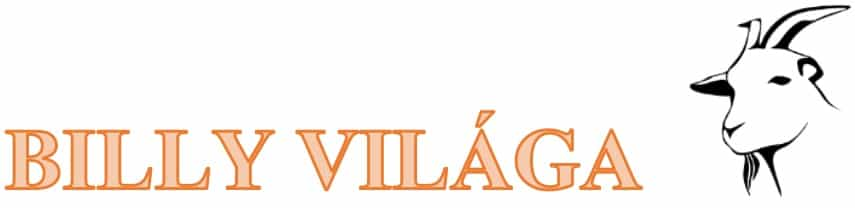

Billy Világa
„Mellékalakok főszerepben” blogbejegyzés író pályázat – 1. helyezés
Harka Sára

Emberek! El kell mesélnem, hogy mi történt velem! Ezt nem fogjátok elhinni. Negyvenkét perccel ezelőttig számomra semmi nem számított, csak a fű. Bezony, egy kecske voltam. Ráadásul kecskék között sem voltam különleges, csupán egy átlagos – Brevis szerint átlag alatti – kecskebak. Tejszínű bundám volt vattafehér szakállal, két íves szarvval, és örökösen a fűre gondoltam. Gazdasági világválság? Én ettem a füvet. Terrortámadások? Hol a friss, zöld füvem? Koronavírus? Fű, csak a fű.
Kalandom azzal kezdődött, hogy egy reggel Brevis gazdám kötelet kötött a nyakamba, mely tettéért egy bordán rúgással és egy combharapással fizetett, és elindultunk a piac felé. Utáltam, hogy egy tengericsillag tempójával csoszogott mögöttem, amikor én vágtázni próbáltam, cserébe ráncigált, mikor ejtőzésre vágytam.
Az erdőszéli keresztútnál belebotlottunk egy régimódi szekérbe, meg egy szikrázóan magas, dekoratív nőszemélybe, skarlátvörös ruhát és hozzáillő rúzst viselt. Esküszöm, majdnem olyan szép volt, mint Michelle Pfeiffer. Brevis nyomban dadogni kezdett a láttán. Nem nagyon foglalkoztam azzal, mit tereferélnek, mert rávetettem magamat egy ropogós fűcsomóra, de egyszer csak látom, hogy Brevis átadta a kötelemet az asszony kezébe.
Ekkor a nő a homlokom közepére, a két szemem közé nyomta a mutatóujját, aztán elengedte a kötelemet. Megpróbáltam világgá szaladni, miképp csak a kecskék és a bölcsődés embersarjak képesek, de egyszeriben mozdulni sem bírtam. A lábam nem engedelmeskedett. És ha azt hiszed, ennél bizarrabb nem lehet, akkor ezt hallgasd: az asszony Brevis orrnyergére bökött, topázkék láng kúszott ki az ujja hegyéből, és Brevis kecskévé változott.
Ott állt mellettem négy lábon, szintén fehér szőrrel. Hát ez kész! – gondoltam. Most végre megtudja, milyen érzés, mikor cibálja a szőrömet, vagy bekerget az istállóba. Jól ki is mekegtem őt. Me-ek, me-ek, me-e-e-ek.
De indulnunk kellett, és húzni a boszorkány szekerét. Fenyegetően csattogtatta az ostorát, ha nem vonszoltuk elég tempósan. Iszonyú volt! Rágásban aranyérmesek vagyunk, de a kocsihúzás, az nem kecskének való meló. Ha már varázsujja van, akkor nem lehetett volna, hogy egy életerős lovat varázsol Brevisből? Vagy egy pár lóerős Ferrarit.
Később találkoztunk egy másik boszorkánnyal, aki rikító színű cirkuszoskocsiban lakott, és volt egy kismadara, lábával a kocsihoz láncolva. Amíg ezek letelepedtek a pattogó tűz köré, vadnyulat sütöttek és csillagokról hadováltak, én békében füveztem a szekér tövében. Aztán a két banya összebalhézott valamin, úgyhogy indulnunk kellett.
Miután lihegve átcaplattunk a hágón, végre megálltunk, és a nő előkapta a varázsujját: a szekér helyébe felhúzott egy hotelt. Csak így, három másodperc alatt. Épp egy dércsípte galagonyaszemet rágtam le a bokorról, és egyszeriben ott trónolt előttem egy pompázatos szálloda. Muskátlis ablakpárkányokkal, „SZÁLLÓVENDÉGEK RÉSZÉRE FENNTARTOTT PARKOLÓHELY” táblával, frissen mosott törölközők és miniatűr szappanok illatával, meg minden. A galagonya is kiesett a számból, ahogy néztem.
Ekkor a boszorkány – aki mintha hirtelen öregedett volna pá évet – a fülemhez hajolt, és különös szavakat suttogott. A testem nyúlni és csupaszodni kezdett, az értelmem pedig tágult, mintha szétfeszítené a koponyámat. A magasságom száznyolcvanhét centire nőtt, a gerincem egy hangos roppanással felegyenesedett. A mellső lábam izmos karrá dagadt, a testemet borító millió szőrszál visszahúzódott a bőröm alá. A patáim helyébe nyirkos, rózsaszín talpat kaptam. A derekam alatt két puha fenékpofám nőtt, ráadásul rájuk lehet ülni. Ülni! Elképesztő, korábban csak állni és feküdni tudtam. A kecskeszakállam helyett pedig… jé, most, hogy az államat tapogatom, a fehér kecskeszakállam az megmaradt.
Ember lettem. Immár Billynek hívnak. Most itt vagyok, a hotel egyik szobájában ülök – ÜLÖK!! –, a számítógép előtt, és le se lehet vakarni a vigyort az arcomról. A nyitott ablakomból egy tágas legelőre látok, orromat betölti a frissen nyírt gyep illata, és még csak meg sem kívánom a füvet. Teljesen leszoktam róla.
Képes vagyok a billentyűzeten pötyögni, mert mind a tíz ujjam egyenként mozgatható. Tudok beszélni, több tucat különböző hangot formázni a számmal, melyek értelmes szavakba rendeződnek. Kiélesedett a látásom, és észreveszek olyan dolgokat, amik mellett idáig vakon éldegéltem. Végre értem a világ összefüggéseit.
Fantasztikus érzés! Ti emberek, nem tudjátok, mekkora mázlisták vagytok. Ezért kezdtem el blogolni, hogy felhívjam a figyelmeteket erre: nem mindenki olyan szerencsés, mint ti.
Egyesek gilisztának születnek, és életüket a földben csúszva-mászva töltik, míg ketté nem vágja őket egy kertész ásója. Másokból meztelencsiga, láncra vert kutya vagy tejfölösbödönnyi akváriumba zárt aranyhal lesz. Valaki struccként érkezik a világba, képzeld csak el, milyen lenne az életed, ha a napi tennivalóid listája abból állna, hogy homokba ásd a fejed, és behemót tojásokat tojj. Vagy aminek a legirtózatosabb lenni: ganajtúrónak. Ó, Uram irgalmazz!
Ti ezt nem értitek, mert természetesnek veszitek az emberi mivoltotokat, bele sem gondoltok, milyen sors jutott a többieknek. Én viszont átéltem. Nem mondom, hogy kecskének lenni szégyen, de nem is nagy méltóság. Be voltam zárva egy kérődző párosujjú patás testének börtönébe, egy szűklátókörű, primitív elmével. Fogalmam sem volt arról, hogy a hátsóudvarunkon túl nem csupán más városok és országok találhatók, hanem különböző kontinensek terülnek el a Földön, ráadásul a bolygónkon kívül egy felfoghatatlan univerzum áll. Nem tudtam, hogy léteznek gejzírek, amik forró vízgőzt pöfékelnek a levegőbe. Még csak azzal sem voltam tisztában, hogy engem egy nap MEG AKARTAK ENNI! Jóságos ég! A víz is kiver, ahogy belegondolok.
Ti emberek, két lábon jártok, a kezetekben van a világ, és mégis panaszkodtok. Olyan dolgokon aggodalmaskodtok, hogy nem elég fehér a fogatok – láttad már egy kecske fogsorát? –, vagy a dugóban lassan halad az autó – jártatok már négylábon? Irtózatos kiváltság az, hogy embernek születtetek. Legyetek hálásak érte!
Képes vagy megvakarni a hátadat, ha viszket? Káprázatos! Én nem tudtam. Örülj, hogy ember vagy!
Képes vagy olvasni, vagyis a szemed előtt a betűk történetekké állnak össze, és képek villannak mellé a fejedben? Fenomenális! Képes vagy a tenyereddel lecsapni a szúnyogot, mielőtt az jól belakmározna a nyakad véréből? Zsírkaraj. Szokták ráncigálni a melleidet, hogy tejet fecskendezzenek a reggeli gabonapehelybe? Nem? Soha? Egyszer sem?
Netalántán félő, hogy a környezetedben élők feldarabolnak, s még abban sincs döntési szabadságod, hogy kolbász vagy barbecue legyen belőled? Hmm? Nem ismerős? Úgy hangzik, mintha minden okod meglenne örülni.
Én annyira, de annyira boldog vagyok, hogy immár ember lehetek! Remegek az izgatottságtól, ha belegondolok, mennyi lehetőség áll előttem! Hátralévő életemnek minden percét jól ki szeretném használni. Temérdek tervem van, megtanulok főzni és sakkozni, és állatos mamuszt fogok hordani színes zoknikkal. Rászokok a kávéra, majd leszokok róla. Elmegyek búvárkodni, síelni és siklóernyőzni. Beutazom az összes kontinenst, és megnézem a gejzíreket. Száz és száz blogbejegyzést írok még a világ csodáiról, és motivációs coach leszek, beszédeket tartok emberek ezreinek. Elmesélem majd a történetemet, és felhívom a figyelmüket arra, mekkora ajándék az életük, és… és…
Hú, gyorsan be kell fejeznem a blogolást, mert itt áll a boszorkány mögöttem. Rám parancsol, hogy menjek le segíteni, mert megérkeztek a vendégek. Erre azt válaszolom, hogy mióta emberi tudatra ébredtem, szabad akaratom van, és az elmém erejével kikerültem a bűvköre alól. Többé nem vagyok hajlandó engedelmeskedni neki, belekeveredni a baljós varázsügyeibe, hogy a végén felökleljen egy felbőszült unikornis.
Erre eltorzul az arca és közelebb lép. Jaj, rám szegezi az ujját, topázkék fényt látok, mindent beterít és…Jaj ne! Könyörgöm csak ezt ne!
Jé, milyen gyönyörű fű. Me-ek, me-e-e-ek.